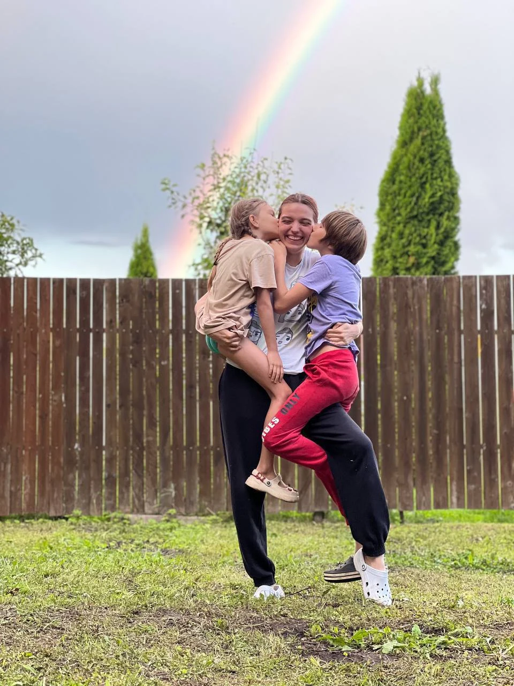

Персональный подбор няни
Найду няню,
с которой спокойно вам
и хорошо ребёнку
Беру на себя поиск, интервью и проверки. Вы знакомитесь с кандидатками и выбираете человека для своей семьи.
Обсудить подбор Как проходит работа
Результат моей работы
Подробные анкеты.
Личные комментарии.
- Опыт няни и условия работы
- Её подход к ситуациям с ребёнком
- Почему я предлагаю вам познакомиться
О подборе
Обсуждаю с няней ситуации
из жизни вашего ребёнка.
Ребёнок расплакался
и не хочет уходить
с площадки.
Как вы поступите?
Для семьи с трёхлетним ребёнком обсудим такую ситуацию. Для родителей двух школьников — как няня распределит внимание, если одному нужна помощь с уроками, а другой затевает ссору.
В анкете объясняю, почему предлагаю познакомиться с этой кандидаткой и что стоит обсудить при встрече.
Изучаю отклики
Сверяю опыт кандидатки, график и условия с вашим запросом.
Созваниваюсь на 10–15 минут
Рассказываю о семье, уточняю ожидания няни и условия вакансии.
Провожу личное интервью
Разбираю рабочие ситуации и готовлю подробный профиль с комментариями.
Кто ведёт ваш подбор
Анастасия
Доронина.
Подбираю нянь с 2022 года. Начинала в двух агентствах, а теперь веду каждый подбор лично. За это время провела больше 500 собеседований и помогла найти няню более чем 40 семьям.
До рекрутинга я пять лет работала няней, тренером и педагогом. Прошла очную переподготовку на няню-гувернантку и рекрутера по подбору домашнего персонала: больше 400 академических часов с практикой.
Я старшая сестра в многодетной семье. С 13 лет часто оставалась дома за главную и знаю, как можно любить детей и всё равно уставать. Поэтому на первом разговоре мне важно понять, где вам особенно нужна помощь.
Познакомиться в Telegram

Этапы работы
Как проходит подбор.
Обсуждаем
ваш запросНа созвоне уточняем задачи, график и правила семьи. За один-два дня я готовлю описание вакансии. Вы его согласовываете и вносите предоплату.
Результат: понятны задачи и условия работыПолучаете
первые анкетыВ течение двух недель после предоплаты собираю первые две-четыре анкеты с комментариями. При необходимости продолжаю поиск без ограничения числа анкет.
Результат: есть кандидаты для знакомстваЗнакомитесь
и пробуетеОрганизуем встречи и пробные дни. Подсказываю, как подготовить ребёнка к знакомству, и помогаю с адаптацией.
Результат: вы понимаете, подходит ли вам няняПроверяю
документыПосле выбора няни проверяю документы и рекомендации. Если нужен договор, помогу его подготовить. Остаюсь на связи после выхода няни.
Результат: можно переходить к сотрудничеству
Стоимость и условия
Один подбор.
Один месячный оклад няни.
Неограниченное количество анкет
Продолжаем поиск подходящего вашей семье человека.
Бесплатная замена — 6 месяцев
Если сотрудничество с няней не сложилось, подберу замену.
Личное сопровождение
Помогаю с выбором, знакомством и адаптацией няни.
История одной семьи
Первая кандидатка
осталась
на полтора года.
Светлана была первой няней, которую я предложила семье. Она работала с ребёнком до его выхода в детский сад.
Затем Светлана перешла в другую семью, которой я помогала с подбором.
Начать подбор
Обсудим
ваш запрос.
Расскажите, сколько лет ребёнку, какой график вам нужен и что вы хотите поручить няне.
Написать в TelegramМожно написать напрямую или подготовить сообщение в форме.